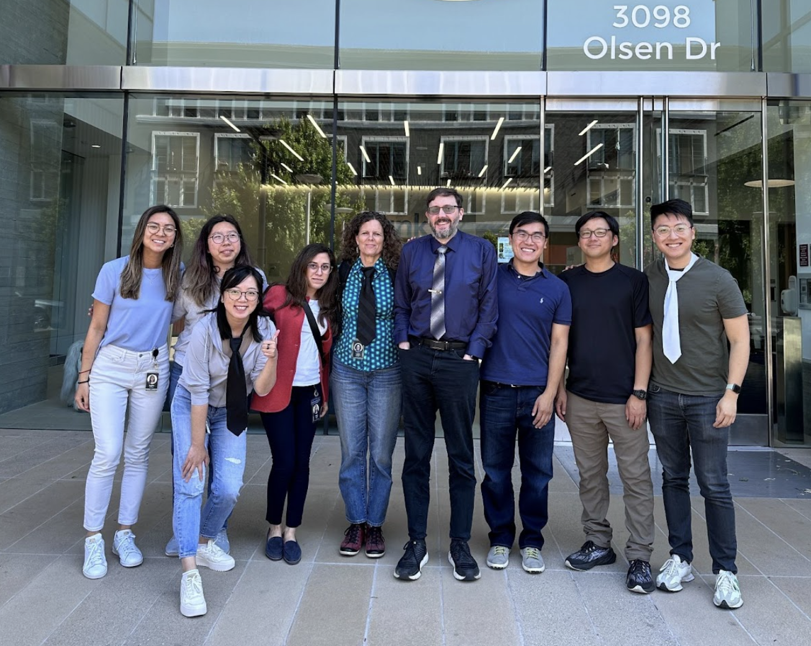
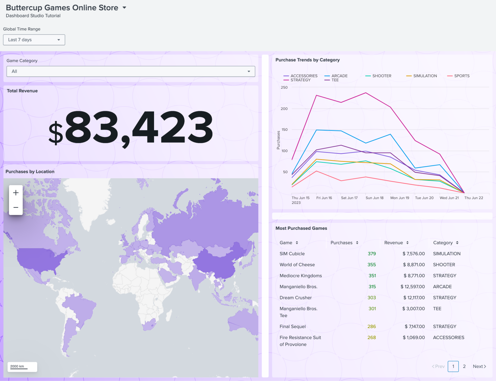
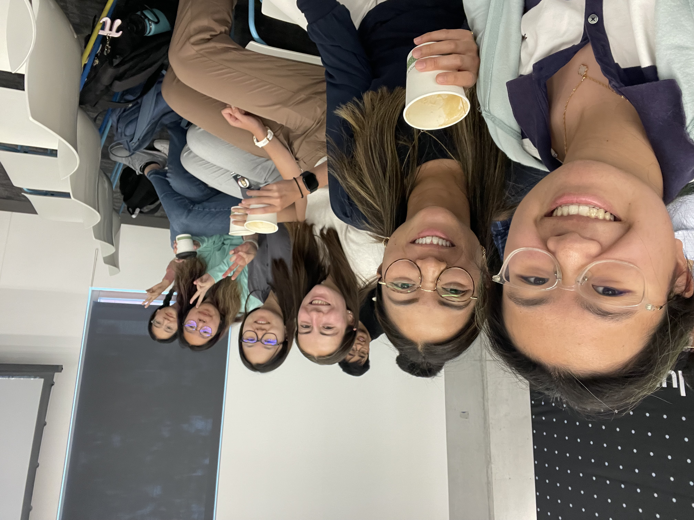
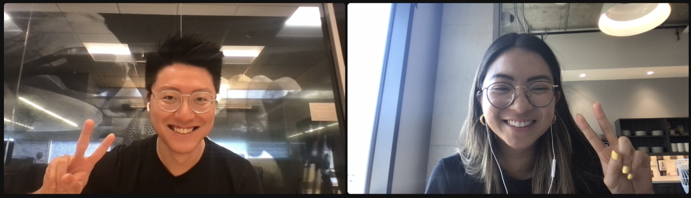

breaking
into tech
+ pm

past internships
- strategy & operations at loblaw digital
- product marketing management at microsoft
- product strategy at applied brain research

product management internship at splunk
may - aug 2023
answers to 10 questions about my internship :)
1. What motivated you to apply to Splunk?
I heard about Splunk’s fun culture from friends in Waterloo and was very curious about it! I noticed many Product Managers did not come from a traditional background and was very interested in the open environment to learn. I really appreciated how the interview process involved a take-home assignment as it allowed me to showcase my abilities and skills. Having been working here for a bit, I can confirm that this is one of the best internships I have had, if not the best!

2. How is your internship going thus far?
I am loving my time at Splunk! I am extremely grateful for this opportunity, to grow as a Product Manager and connect with so many talented and kind people. My team has fostered a welcoming environment where I feel comfortable trying new things and driving initiatives! As I have gotten actionable feedback regularly, I have been able to see my personal growth too.
I enjoy coming to the office and connecting with other interns too! I have met super interesting people and formed great friendships. It has been fun exploring the Bay Area and road-tripping during the weekends :)
3. What projects are you working on?
My primary responsibility this summer is to drive and oversee the implementation of two workflows end-to-end. Other projects I have been working on simultaneously are extracting product adoption and engagement insights by identifying patterns in telemetry data using Splunk, conducting user testing and analyzing Google Analytics metrics to update the beginner's tutorial of our product, and creating a social impact dashboard with other interns. Feel free to check out the Dashboard Studio tutorial Angela Zhu (Technical Writer intern) and I created!

4. How much flexibility do you have in determining how you perform your job?
So much! My manager has given me the autonomy to figure out how to approach problems and make decisions. Personally, this is truly empowering as I get to own projects end-to-end while feeling supported in case I need any help or advice.
5. What skills have you learned at Splunk that will be valuable in your career?
With this being my first experience in Product Management, I wanted to get a complete view of what the role entails and develop all the essential skills. My manager structured my projects such that I got to try the full landscape of being a PM, while aligning our team’s objectives with my career aspirations. This internship has allowed me to develop my product intuition, critical thinking, collaboration, and leadership :)

6. What has been the most memorable part of working with your team?
The scope of one of the workflows I drove was pretty open-ended. This involved an early design process of ideating and researching to define the requirements of the epic. I enjoyed collaborating with our designer as we had multiple iterations to find the best experience for our users. In addition, as the panel we worked on was owned by another team, I made sure to align with their PM, designers, and engineers regularly. Some challenges we faced after creating the designs were discovering more design and technical restrictions along the way. This was a great learning experience as I made sure to adjust rapidly and keep the whole team on track. This feature is actually ready for implementation and we have successfully conducted a knowledge transfer!
7. How would you describe Splunk’s culture?
I do not mean to repeat Splunk’s values, but I think it is a highly accurate reflection of its culture! *Innovative, Passionate, Disruptive, Open and Fun*.
8. What has been your favorite Splunktern event or activity?
The University Recruiting team hosted various events throughout the term, from fun socials to talks with members of the executive team! Huge shoutout to Janet Cabrera, she really made an effort to connect with every intern at the office and encouraged us to meet each other. My favorite event has to be the Boba Social, the first event we had. Besides the yummy drinks, I loved this opportunity to meet interns from different teams and build new friendships.

9. What are your career goals?
Before Splunk, I held multiple roles in product marketing and strategy. My interest in understanding markets and customer needs allowed me to accelerate growth for a deep tech startup, one of the top cloud providers, and the largest Canadian retailer. Although I enjoyed these roles, I got very interested in actually bringing people together to build valuable and innovative solutions. This internship showed me the challenging and exciting world of Product Management and I am truly looking forward to pursuing this career and continuing to grow!
10. What advice would you give someone considering interning at Splunk?
Don’t think twice hahah. I appreciate how Splunk fosters a culture of learning, especially for interns! In these four months, I went from having no Product Management experience to a position where I can corral meetings and drive decisions. The experience here is just super fun - the people you get to meet here make a huge part of it.
